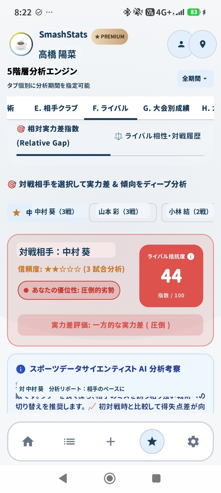
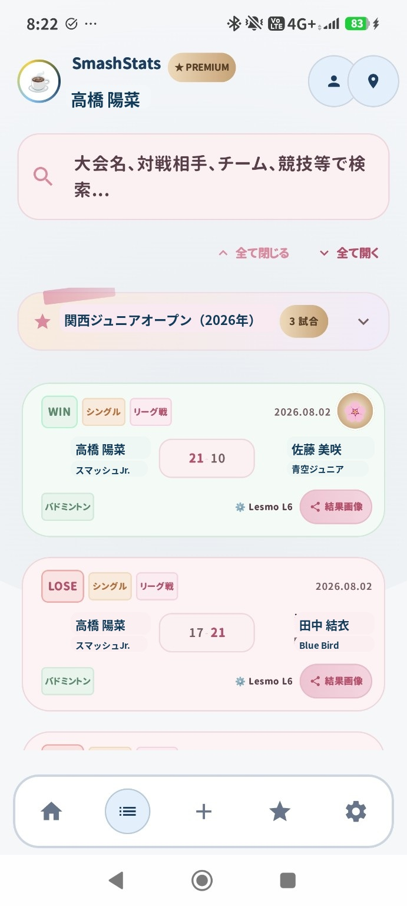

01 / 記録
試合結果が、あとから探せる。
大会名・相手・スコア・会場・用具などを一つの場所に。写真で残した結果も整理できます。
SmashStatsは、試合結果を残すだけではありません。勝率・成長・対戦相手・大会・用具まで、子どもの競技生活をひとつにつなげます。
登録不要・無料のWeb体験版 / スマホですぐ体験


勝敗・スコア・大会・相手を残す
勝率・得失点・推移を自動集計
相手・大会・用具まで深掘り
大会名・相手・スコア・会場・用具などを一つの場所に。写真で残した結果も整理できます。
対戦相手別の実力差や対戦履歴を確認。試合を重ねるほど、ただの勝敗以上の情報が蓄積されます。
勝敗・スコア・大会別成績を自動集計。
勝率や得失点の推移から成長を可視化。
ライバル別の対戦履歴や実力差を確認。
大会ごとの結果を後からすぐ確認。
ラケット・ガットなどのメンテナンス履歴も管理。
会場情報をまとめ、次回の準備をラクに。
サンプルデータ入りのWeb体験版です。試合を追加すると、戦績や分析が変化します。
🏸 SmashStatsを3分体験するログイン不要 / 無料 / スマホ対応
Web体験版の続きはAndroidアプリで。試合の記録を、次の成長につなげられます。